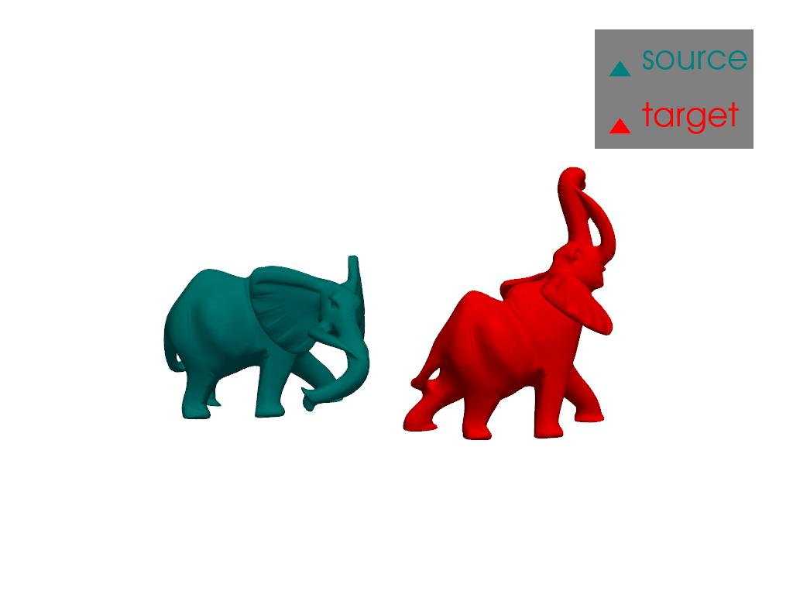
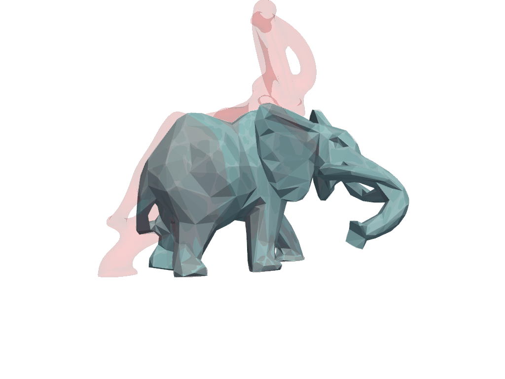
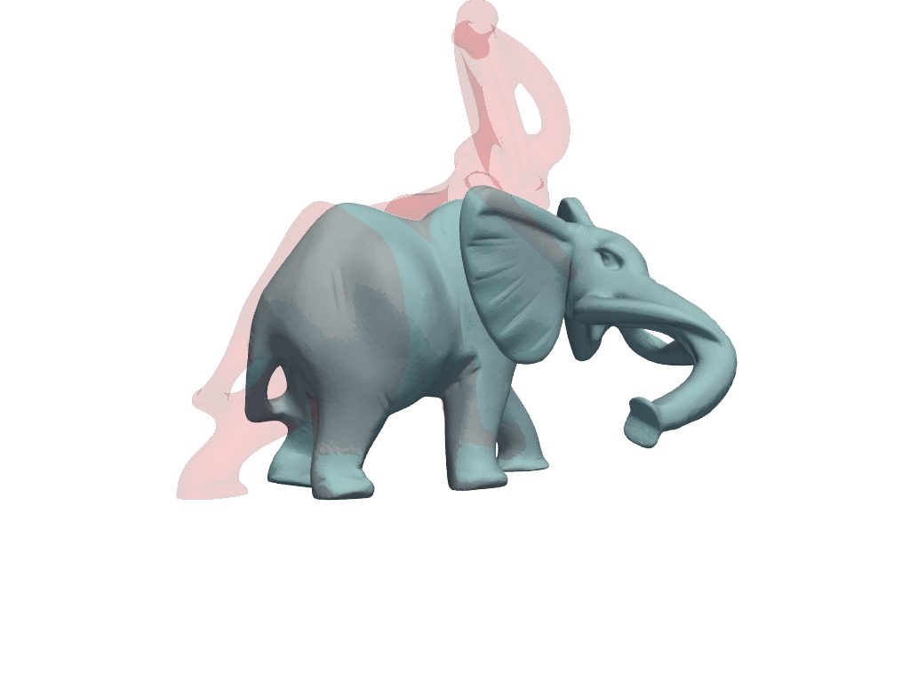

Note
Go to the end to download the full example code
Elastic metric and multiscale strategy¶
This examples is an implementation of the paper “Geometric Modeling in Shape Space” by Kilian, Mitra and Pottmann. More precisely, we implement the algorithm for the Boundary Value Problem, which is a registration between two shapes.
The framework proposed in the paper allows to find a deformation between two shapes that minimizes an elastic metric. Optimizing directly the deformation in full resolution and with a large number of steps usually leads to bad local minima. To avoid this, the authors propose a multiscale strategy, where the optimization is first performed in a coarse resolution and with a small number of steps. Then, refinement can be done by increasing the resolution (space refinement) or the number of steps (time refinement).
In this example, we provide an implementation of the “Boundary Value Problem” algorithm describe in section 3, using the as isometric as possible metric, defined at the end of section 2. The algorithm is applied to the registration of two elephant poses.
Load the data¶
import pyvista as pv
import torch
import skshapes as sks
source_color = "teal"
target_color = "red"
source = sks.PolyData("../data/elephants/pose_B.obj")
target = sks.PolyData("../data/elephants/pose_A.obj")
# Make sure that underlying simplicial complex are the same
triangles = source.triangles
target.triangles = source.triangles
plotter = pv.Plotter()
plotter.add_mesh(source.to_pyvista(), color=source_color, label="source")
plotter.add_mesh(target.to_pyvista().translate([250, 0, 0]), color=target_color, label="target")
plotter.camera_position = [
(107.13691493781944, -436.8511227598446, 929.44474582162),
(138.38692092895508, -5.646553039550781, 2.4097938537597656),
(-0.07742352421458944, 0.9049853883599757, 0.41833843327279513)
]
plotter.add_legend()
plotter.show()

Define function for time refinement¶
Time refinement is the process of doubling the number of steps of the model. First, parameter is augmented by linear interpolation between all the steps. Then, the registration model is refitted with the new parameter to minimize the energy.
It is described in the section 3, paragraph “The Boundary Value Problem” of the paper.
lbfgs = sks.LBFGS()
def time_refinement(
parameter: torch.Tensor,
model: sks.BaseModel,
loss: sks.BaseLoss,
source: sks. PolyData,
target: sks.PolyData,
regularization_weight: float,
optimizer: sks.BaseOptimizer = lbfgs,
n_iter: int = 4,
gpu: bool = True,
verbose: bool = False
) -> tuple[torch.Tensor, sks.Registration, sks.BaseModel, list[sks.PolyData]]:
"""Double the number of steps by linear interpolation and refit the registration model.
Parameters
----------
parameter
The parameter to refine.
model
The model used for the registration.
loss
The loss function.
source
The source shape.
target
The target shape.
regularization_weight
The regularization weight.
optimizer
The optimizer.
n_iter
The number of iterations.
gpu
Whether to use the GPU (if available).
verbose
Whether to print information during the process.
"""
# Copy the model
refined_model = model.copy()
# Double the number of steps by linear interpolation
# for the refined parameter
n_steps = parameter.shape[1]
if verbose:
print("Doubling the number of steps by linear interpolation...")
n_steps = 2 * n_steps
new_parameter = torch.zeros((parameter.shape[0], n_steps, parameter.shape[2]))
for i in range(parameter.shape[1]):
new_parameter[:, 2* i, :] = parameter[:, i, :] / 2
new_parameter[:, 2 * i + 1, :] = parameter[:, i, :] / 2
# Update the model's n_steps and the regularization weight of the registration.
# note that the number of steps depends on the presence of fix endpoints
if model.endpoints is not None:
refined_model.n_steps = new_parameter.shape[1] + 1
else:
refined_model.n_steps = new_parameter.shape[1]
# Now, we can fit the refined parameter to minimize the energy
if verbose:
print("Optimizing the refined path wrt the metric...")
registration = sks.Registration(
model=refined_model,
loss=loss,
optimizer=optimizer,
regularization_weight=regularization_weight,
verbose=verbose,
n_iter=n_iter,
gpu=gpu,
)
# Fit the refined parameter
registration.fit(source=source, target=target, initial_parameter=new_parameter)
return registration.parameter_, refined_model
Define function for Space refinement¶
Space refinement is the process of refining the path by projecting the points of the fine mesh on the coarse mesh.
Each fine mesh can be projected to a coarse mesh,resulting in a system of coordinates. The coordinates consist of (for each point of the fine mesh):
the id of the closer triangle in the coarse mesh
the barycentric coordinates of the point in the triangle (2 coordinates)
the orthogonal coordinate of the point with respect to the triangle normal
With this system of coordinate, a coarse mesh with the same triangles as the one used to define the coordinates can be refined to a finer mesh. It is done by positioning points in the triangle of the coarse mesh and adding the orthogonal coordinate to the position.
The space refinement process consists in:
projecting the fine source and target on the coarse source and target
refining the coarse sequence of poses to a fine sequence of poses for both systems of coordinates
defining the fine sequence as a linear combination of the two refined sequences
This step lead to a fine sequence of poses in at the fine resolution. The registration model can then be refitted to minimize the energy.
This process is described in the section 3, paragraph “The Boundary Value Problem”.
from trimesh import Trimesh
from trimesh.proximity import closest_point
from trimesh.triangles import barycentric_to_points, points_to_barycentric
@torch.no_grad
def compute_coordinates(
fine: sks.PolyData,
coarse: sks.PolyData
) -> tuple[
sks.Int1dTensor,
sks.Float2dTensor,
sks.Float1dTensor
]:
"""Compute coordinates of the fine points in the coarse mesh.
We follow the approach of "Geometric Modeling in Shape Space", the coordinates
are the id of the triangle, the 2D barycentric coordinates in the triangle
and the distance between the point and his projection in the normal direction.
Parameters
----------
fine
The PolyData object of the fine mesh
coarse
The PolyData object of the coarse mesh
Returns
-------
tuple
The id of the triangle, the barycentric coordinates and the orthogonal coordinate
for each fine point.
"""
if not fine.n_points >= coarse.n_points:
msg = f"The fine mesh should have more points than the coarse mesh, got {fine.n_points} and {coarse.n_points}"
raise ValueError(msg)
faces = coarse.triangles.numpy()
vertices = coarse.points.numpy()
fine_points = fine.points.numpy()
mesh = Trimesh(vertices=vertices, faces=faces)
closest, distance, triangle_id = closest_point(mesh=mesh, points=fine_points)
triangle_id = torch.tensor(triangle_id, dtype=sks.int_dtype)
closest = torch.tensor(closest, dtype=sks.float_dtype)
assert triangle_id.shape == (fine.n_points,)
assert closest.shape == fine.points.shape
t = coarse.points[coarse.triangles[triangle_id]]
barycentric = points_to_barycentric(points=closest, triangles=t)
# descr = (triangle_id, barycentric, product with normal)
normals = coarse.triangle_normals / coarse.triangle_normals.norm(dim=-1, keepdim=True)
# p - p' = fine_points - closest
a = fine.points - closest
Ns = normals[triangle_id]
assert a.shape == Ns.shape
# scalar product
orthogonal_coordinate = (a * Ns).sum(dim=-1)
return triangle_id, barycentric, orthogonal_coordinate
@torch.no_grad
def refine(
coarse_mesh,
coord_barycentric,
triangle_id,
orthogonal_coordinate
):
"""Given a system of coordinates, refine the points in the origin mesh.
Parameters
----------
coarse_mesh
The mesh to refine
coord_barycentric
The barycentric coordinates of the fine points
triangle_id
The id of the triangle in the coarse mesh for each fine point
orthogonal_coordinate
The orthogonal coordinate of the fine points with respect to the triangle normal
Returns
-------
sks.Points
The fine points
"""
Ns = coarse_mesh.triangle_normals[triangle_id] / coarse_mesh.triangle_normals[triangle_id].norm(dim=-1, keepdim=True)
# Get the triangle
t = coarse_mesh.points[coarse_mesh.triangles[triangle_id]]
# Compute the orthogonal coordinate
orthogonal = orthogonal_coordinate.repeat(3, 1).T * Ns
# Compute the projection on the triangles
projections = barycentric_to_points(barycentric=coord_barycentric, triangles=t)
projections = torch.tensor(projections, dtype=sks.float_dtype)
return projections + orthogonal
def space_refinement(
coarse_source: sks.PolyData,
coarse_target: sks.PolyData,
fine_source: sks.PolyData,
fine_target: sks.PolyData,
coarse_model: sks.BaseModel,
coarse_parameter: torch.Tensor,
loss: sks.BaseLoss,
regularization_weight: float,
optimizer: sks.BaseOptimizer=lbfgs,
n_iter: int=4,
gpu: bool=True,
verbose: bool=False
) -> tuple[torch.Tensor, sks.BaseModel]:
"""Refine the path following the space refinement strategy.
We start by refining the path from coarse to high resolution and then
optimize it with respect to the Riemannian metric (this optimization can
be disabled by setting n_iter=0)
The output is the parameter in the fine scale and the new model that can
be used later on for registration.
Parameters
----------
coarse_source
The source shape in coarse resolution.
coarse_target
The target shape in coarse resolution.
fine_source
The source shape in fine resolution.
fine_target
The target shape in fine resolution.
coarse_model
The model in coarse resolution.
coarse_parameter
The parameter in coarse resolution.
loss
The loss object for the registration.
regularization_weight
The regularization weight.
optimizer
The optimizer.
n_iter
The number of iterations.
gpu
Whether to use the GPU (if available).
verbose
Whether to print information during the process.
Returns
-------
The parameter and the model in fine resolution.
"""
# Compute the path at coarse level
coarse_path = coarse_model.morph(shape=coarse_source, parameter=coarse_parameter, return_path=True).path
# Copy the model
fine_model = coarse_model.copy()
if coarse_model.endpoints is not None:
fine_model.endpoints = fine_target.points
if verbose:
print("Projecting the fine meshes on the coarse meshes...")
# Compute the coordinates of the fine points in the coarse meshes
triangle_id_source, barycentric_coord_source, orthogonal_coordinate_source = compute_coordinates(fine_source, coarse_source)
triangle_id_target, barycentric_coord_target, orthogonal_coordinate_target = compute_coordinates(fine_target, coarse_target)
fine_parameter = fine_model.inital_parameter(shape=fine_source)
print(fine_parameter.shape)
# fine_parameter = torch.zeros(size=(fine_source.n_points, fine_model.n_free_steps, 3), dtype=sks.float_dtype)
new_points = torch.zeros_like(fine_source.points, dtype=sks.float_dtype)
previous_points = torch.zeros_like(fine_source.points, dtype=sks.float_dtype)
if verbose:
print("Refining the path from coarse to fine...")
for i, p in enumerate(coarse_path):
previous_points = new_points
if i == 0:
# Force the first point to be the source
new_points = fine_source.points
if i == len(coarse_path) - 1 and coarse_model.endpoints is not None:
# Force the last point to be the target
print("ok")
new_points = fine_target.points
coarse_model.endpoints = fine_target.points
else:
newpoints_source = refine(
coarse_mesh=p,
coord_barycentric=barycentric_coord_source,
triangle_id=triangle_id_source,
orthogonal_coordinate=orthogonal_coordinate_source
)
newpoints_target = refine(
coarse_mesh=p,
coord_barycentric=barycentric_coord_target,
triangle_id=triangle_id_target,
orthogonal_coordinate=orthogonal_coordinate_target
)
new_points = ((i+1) / len(coarse_path)) * newpoints_source + (1 - (i+1) / len(coarse_path)) * newpoints_target
fine_parameter[:, i-1, :] = new_points - previous_points
if verbose:
print("Optimizing the fine path wrt the metric...")
registration = sks.Registration(
model=fine_model,
loss=loss,
optimizer=optimizer,
n_iter=n_iter,
regularization_weight=regularization_weight,
verbose=verbose,
gpu=gpu,
)
registration.model = fine_model
registration.fit(source=fine_source, target=fine_target, initial_parameter=fine_parameter)
return registration.parameter_, fine_model
Multiscale representation¶
Back to our example, we first decimate the source and target shapes to a coarseer resolution. The decimation is done in parallel for both shapes to keep the correspondence between the points.
n_points_coarse = 650
# Parallel decimation of source and target
# the same decimation module is used for creating the multiscale representation
# of the source and target
decimation_module = sks.Decimation(n_points=650)
decimation_module.fit(source)
n_points = [n_points_coarse]
multisource = sks.Multiscale(source, n_points=n_points, decimation_module=decimation_module)
multitarget = sks.Multiscale(target, n_points=n_points, decimation_module=decimation_module)
coarse_source = multisource.at(n_points=n_points_coarse)
coarse_target = multitarget.at(n_points=n_points_coarse)
fine_source = multisource.at(n_points=source.n_points)
fine_target = multitarget.at(n_points=target.n_points)
# Plot the coarse source and target
plotter = pv.Plotter()
plotter.add_mesh(coarse_source.to_pyvista(), color=source_color, label="coarse source")
plotter.add_mesh(coarse_target.to_pyvista().translate([250, 0, 0]), color=target_color, label="coarse target")
plotter.camera_position = [
(107.13691493781944, -436.8511227598446, 929.44474582162),
(138.38692092895508, -5.646553039550781, 2.4097938537597656),
(-0.07742352421458944, 0.9049853883599757, 0.41833843327279513)
]
plotter.add_legend()
plotter.show()
Linear blending in coarse resolution¶
The first path is obtained by a linear blending between the source and target shapes. The linear blending can be directly computed from the difference between the source and target points. Here we use a registration with IntrinsicDeformation model and L2Loss loss with a regularization weight of 0.0. In this context, the optimal parameter is the linear blending between the source and target shapes.
As illustrated by the animation below, the linear blending is not satisfactory as the trunk of the elephant is shrunk in the middle of the path.
registration = sks.Registration(
model=sks.IntrinsicDeformation(n_steps=10),
loss=sks.L2Loss(),
optimizer=sks.LBFGS(),
n_iter=3,
regularization_weight=0.0,
)
registration.fit(source=coarse_source, target=coarse_target)
path = registration.path_
linear_parameter = registration.parameter_
cpos = [
(-180.28077332975926, -359.5814717933118, 468.17714455864336),
(23.941261291503906, -56.907809257507324, 2.4097938537597656),
(-0.06479680268614828, 0.8494856829410709, 0.5236176552025292)
]
plotter = pv.Plotter()
plotter.open_gif("coarse_linear.gif", fps=4)
for i in range(len(path)):
plotter.clear_actors()
plotter.add_mesh(source.to_pyvista(), color=source_color, opacity=0.1)
plotter.add_mesh(target.to_pyvista(), color=target_color, opacity=0.1)
plotter.add_mesh(path[i].to_pyvista())
plotter.camera_position = cpos
plotter.write_frame()
plotter.close()

As isometric as possible registration in coarse resolution¶
Following the remark at the end of section 2, we add additional edges to the source shape to make it stiffer. The choice of stiffener here is a k-ring graph with k=8. A k-ring graph is a graph where each vertex is connected to its k-nearest neighbors in the graph.
This additional rigidity helps to avoid the shrinkage of the trunk during the deformation. As illustrated by the animation below, the registration is much more satisfactory than the linear blending as the length of the trunk seems to be preserved.
model = sks.IntrinsicDeformation(n_steps=10, metric="as_isometric_as_possible")
loss = sks.L2Loss()
coarse_source.stiff_edges = coarse_source.k_ring_graph(k=8)
registration = sks.Registration(
model=model,
loss=loss,
optimizer=sks.LBFGS(),
n_iter=2,
regularization_weight=0.0001,
verbose=True,
)
registration.fit(source=coarse_source, target=coarse_target, initial_parameter=linear_parameter)
path = registration.path_
parameter = registration.parameter_
plotter = pv.Plotter()
plotter.open_gif("coarse_isometric.gif", fps=4)
for i in range(len(path)):
plotter.clear_actors()
plotter.add_mesh(source.to_pyvista(), color=source_color, opacity=0.1)
plotter.add_mesh(target.to_pyvista(), color=target_color, opacity=0.1)
plotter.add_mesh(path[i].to_pyvista())
plotter.camera_position = cpos
plotter.write_frame()
plotter.close()
Initial loss : 5.99e+05
= 8.13e-09 + 0.0001 * 5.99e+09 (fidelity + regularization_weight * regularization)
Loss after 1 iteration(s) : 1.17e+05
= 2.11e+04 + 0.0001 * 9.58e+08 (fidelity + regularization_weight * regularization)
Loss after 2 iteration(s) : 1.12e+05
= 1.93e+04 + 0.0001 * 9.29e+08 (fidelity + regularization_weight * regularization)
Time refinement¶
Although better than the linear blending, the registration is not perfect. The movement of the trunk is still not realistic. To improve the registration, we apply a time refinement. Doubling the number of time steps increases flexibility at the price of a higher computational cost. However, the metric evaluation are typically not linear with the number of steps as we use pyTorch parallel computation as much as possible.
After the time refinement, the deformation is much more realistic. The trunk is not shrunk anymore and the deformation is more natural. We can now move on to the space refinement to obtain a deformation in full resolution.
parameter, model = time_refinement(
parameter=parameter,
model=model,
loss=loss,
source=coarse_source,
target=coarse_target,
regularization_weight=0.0001,
n_iter=3,
verbose=True
)
path = model.morph(shape=coarse_source, parameter=parameter, return_path=True).path
plotter = pv.Plotter()
plotter.open_gif("coarse_isometric_refined.gif", fps=8)
for i in range(len(path)):
plotter.clear_actors()
plotter.add_mesh(source.to_pyvista(), color=source_color, opacity=0.1)
plotter.add_mesh(target.to_pyvista(), color=target_color, opacity=0.1)
plotter.add_mesh(path[i].to_pyvista())
plotter.camera_position = cpos
plotter.write_frame()
plotter.close()
Doubling the number of steps by linear interpolation...
Optimizing the refined path wrt the metric...
Initial loss : 3.83e+04
= 1.93e+04 + 0.0001 * 1.90e+08 (fidelity + regularization_weight * regularization)
Loss after 1 iteration(s) : 2.50e+04
= 2.43e+03 + 0.0001 * 2.26e+08 (fidelity + regularization_weight * regularization)
Loss after 2 iteration(s) : 2.43e+04
= 2.41e+03 + 0.0001 * 2.19e+08 (fidelity + regularization_weight * regularization)
Loss after 3 iteration(s) : 2.43e+04
= 2.40e+03 + 0.0001 * 2.19e+08 (fidelity + regularization_weight * regularization)
Space refinement¶
The space refinement is the last step of our multiscale strategy. The path is refined from a coarse resolution where each mesh has 650 points to a fine resolution where each mesh has approximately 40k points.
parameter, model = space_refinement(
coarse_source=coarse_source,
coarse_target=coarse_target,
fine_source=fine_source,
fine_target=fine_target,
coarse_model=model,
loss=loss,
coarse_parameter=parameter,
regularization_weight=0.0001,
n_iter=1,
verbose=1
)
path = model.morph(shape=fine_source, parameter=parameter, return_path=True).path
plotter = pv.Plotter()
plotter.open_gif("fine_registration.gif", fps=8)
for i in range(len(path)):
plotter.clear_actors()
plotter.add_mesh(source.to_pyvista(), color=source_color, opacity=0.1)
plotter.add_mesh(target.to_pyvista(), color=target_color, opacity=0.1)
plotter.add_mesh(path[i].to_pyvista())
plotter.camera_position = cpos
plotter.write_frame()
plotter.close()

Projecting the fine meshes on the coarse meshes...
torch.Size([39969, 20, 3])
Refining the path from coarse to fine...
Optimizing the fine path wrt the metric...
Initial loss : 2.31e+05
= 2.31e+05 + 0.0001 * 5.73e+02 (fidelity + regularization_weight * regularization)
Loss after 1 iteration(s) : 1.69e-02
= 4.60e-07 + 0.0001 * 1.69e+02 (fidelity + regularization_weight * regularization)
Remarks¶
This example illustrates the multiscale strategy proposed by Kilian, Mitra and Pottmann. In the paper, the authors suggest strategies with more than two scales. The code written here can be easily adapted to deal with more intricate multiscale strategies.
As a take-home message:
Register directly the shapes in full resolution is usually not a good idea
Coarse representation can be used to find a good initialization for the registration by adding stiffness to the shapes (e.g. with a k-ring graph)
Time refinement can be used to add flexibility to the deformation
When the coarse deformation is satisfactory, space refinement can be used to obtain a deformation in full resolution.
For future work, this strategy can be applied to more intricate problems such as the registration of 3D shapes with different topologies (with varifold loss for instance) or other metrics. The projection step in the space refinement can also be improved by using a intrinsic metric to compute the coordinates of the fine points in the coarse mesh instead of the Euclidean metric.
Total running time of the script: (1 minutes 4.560 seconds)